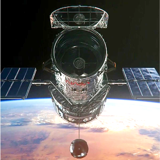
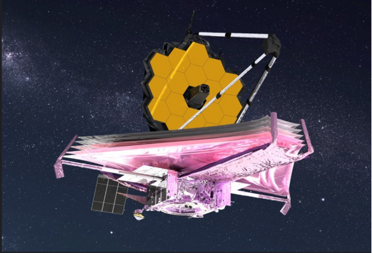

우주 망원경의 회절 스파이크 현상
별 주위에 나타나는 빛 갈라짐의 물리광학적 원인 분석
1. 회절 스파이크(Diffraction Spikes)의 정의
반사망원경으로 촬영한 항성(Star) 이미지에서 별을 중심으로 십자가 또는 성형(星型)으로 빛이 뻗어나가는 현상을 회절 스파이크(Diffraction Spikes)라고 합니다.
이 현상은 별빛 자체가 가진 고유한 형태가 아니며, 망원경 내부 구조물(부경 지지대 및 주경의 모서리)을 빛이 통과할 때 발생하는 회절(Diffraction)과 간섭(Interference)이라는 파동의 특성 때문에 발생하는 광학적 인공물(Artifact)입니다.

동일한 영역('창조의 기둥')을 촬영한 허블 우주 망원경(좌)과 제임스 웹 우주 망원경(우)의 이미지. 별 주위 빛 갈라짐의 개수와 형태가 명확히 다름을 확인할 수 있습니다.
2. 망원경 구조에 따른 스파이크 형태의 차이

허블 우주 망원경 (HST) 구조

제임스 웹 우주 망원경 (JWST) 구조
가. 허블 우주 망원경 (HST) : 4개의 스파이크
허블 망원경의 이미지는 뚜렷한 십자가 형태(4갈래)의 빛 갈라짐을 보여줍니다.
- 부경 지지대에 의한 회절: 허블 망원경은 2차 거울(부경)을 지지하기 위해 90도 간격으로 교차하는 4개의 일자형 막대(Spider Vanes)를 사용합니다.
- 빛의 파동이 이 막대들을 통과할 때, 막대의 길이 방향에 수직인 방향으로 회절이 일어납니다.
- 수평 지지대는 수직 방향의 회절광을, 수직 지지대는 수평 방향의 회절광을 생성하므로, 결과적으로 총 4개의 회절 스파이크가 90도 간격으로 나타납니다.
나. 제임스 웹 우주 망원경 (JWST) : 8개의 스파이크 (6+2)
제임스 웹 망원경의 이미지는 6개의 뚜렷한 스파이크와 2개의 희미한 스파이크를 포함하여 총 8갈래의 빛 갈라짐을 보여줍니다. 이는 두 가지 회절 요인이 결합된 결과입니다.
- 주경 모서리에 의한 회절 (6개): JWST의 1차 거울(주경)은 원형이 아니라 18개의 육각형 거울 조각으로 이루어져 있습니다. 육각형은 3쌍의 평행한 변을 가지므로, 각 변에 수직으로 발생하는 회절광이 모여 6개의 주요 회절 스파이크를 형성합니다.
- 부경 지지대에 의한 회절 (2개 추가): JWST의 부경은 '삼발이' 형태의 3개 지지대에 의해 고정되어 있습니다. 이 3개의 막대 역시 6갈래의 회절광을 만들어냅니다.
- 광학적 정렬 설계: NASA의 광학 엔지니어들은 스파이크가 화면을 과도하게 가리는 것을 방지하기 위해, 하단 2개의 부경 지지대가 만드는 4개의 스파이크가 주경 모서리가 만드는 6개의 스파이크 중 4개와 완전히 겹치도록 지지대의 각도를 설계했습니다.
- 결과적으로 상단의 수직 지지대 1개가 만들어내는 희미한 수평 방향의 스파이크 2개만 독립적으로 추가되어, 최종적으로 8갈래의 패턴이 나타납니다.
3. 스파이크 내부의 명암 패턴 (점선 무늬)
회절 스파이크를 자세히 관찰하면 선이 연속적이지 않고 밝고 어두운 부분이 점선처럼 반복되는 것을 볼 수 있습니다. 이는 빛의 파동성에 의한 간섭(Interference) 현상입니다.
- 지지대나 거울의 모서리 양끝에서 꺾여 들어온 빛의 파동들은 같은 공간으로 전파되면서 서로 겹치게 됩니다.
- 이 파동들의 위상(Phase)이 일치하여 중첩되는 지점에서는 진폭이 커져 밝은 무늬(보강 간섭, Constructive Interference)가 나타납니다.
- 반대로 위상이 반대가 되어 중첩되는 지점에서는 파동이 상쇄되어 어두운 무늬(상쇄 간섭, Destructive Interference)가 나타납니다.
- 빛의 파장(색상)에 따라 보강 및 상쇄 간섭이 일어나는 기하학적 위치가 다르기 때문에, 다파장 영역을 합성한 이미지에서는 스파이크를 따라 무지개색의 점선 패턴이 나타나게 됩니다.
참고 문헌 (References)
- NASA Webb Telescope - Why Do Webb's Images Have 8-Pointed Stars? (Diffraction Spikes Explanation)
- ESA Hubble - Hubble's High-Definition Panoramic View of the Andromeda Galaxy (Understanding Spikes)
- M. Born & E. Wolf, Principles of Optics, 7th Edition (Section 8.3: Fraunhofer diffraction at apertures of various forms).